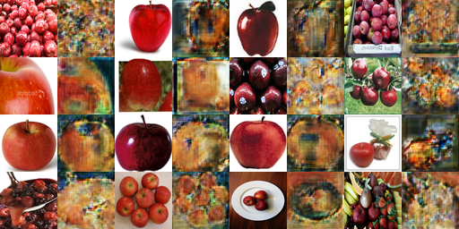

Introduction
In this assignment, I got hands-on experience implementing and training different types of generative models. The project consists of three parts:
- Deep Convolutional GAN (DCGAN) for generating cat images from random noise
- Denoising Diffusion Probabilistic Model (DDPM) for iteratively denoising images
- CycleGAN for image-to-image translation between different types of cats and fruits
Part 1: Deep Convolutional GAN
This part implements a modified version of Deep Convolutional GAN (DCGAN), which is a GAN architecture that uses convolutional neural networks. In a DCGAN, the discriminator is implemented as a convolutional neural network, while the generator traditionally uses transposed convolutions. For this implementation, I use a combination of upsampling and convolution layers instead of transposed convolutions in the generator.
1.1 Data Augmentation
DCGAN performs poorly without data augmentation on a small-sized dataset because the discriminator can easily overfit to a real dataset. To address this issue, I implemented data augmentation techniques including random crop and random horizontal flip in the data_loader.py file.
1.2 Implement the Discriminator of the DCGAN
The discriminator in this DCGAN is a convolutional neural network that downsamples the input image through a series of convolutional layers.
Padding Calculation in Convolutional Layers
In each of the convolutional layers, we downsample the spatial dimension of the input volume by a factor of 2. Given that we use kernel size K = 4 and stride S = 2, we need to determine the appropriate padding.
To calculate the padding, we use the formula for the output width of a convolutional layer:
Wout = ⌊(W + 2 * padding - kernel_size) / stride + 1⌋
Rearranging this formula to solve for padding:
padding = ((Wout - 1) * stride + kernel_size - W) / 2
For our specific case, solving with Wout = 32, W = 64, kernel_size = 4, and stride = 2:
padding = ((32 - 1) * 2 + 4 - 64) / 2 = (62 + 4 - 64) / 2 = 2 / 2 = 1
Implementation of the Discriminator
I implemented the DCGAN discriminator architecture by filling in the __init__ and forward methods of the DCDiscriminator class in models.py. The architecture consists of 5 convolutional layers with batch normalization and leaky ReLU activations.
1.3 Generator Implementation
The generator of the DCGAN consists of a sequence of upsample+convolutional layers that progressively upsample the input noise sample to generate a fake image.
1.4 Training Loop
I implemented the training loop for the DCGAN in vanilla_gan.py. The training procedure involves alternating between training the discriminator to distinguish between real and fake images, and training the generator to produce images that fool the discriminator.
1.5 Differentiable Augmentation
To improve the data efficiency of GANs, I applied differentiable augmentations to both real and fake images during training. This technique helps reduce overfitting in the discriminator by augmenting both sets of images in a way that preserves gradients for backpropagation.
1.6 DCGAN Experiments and Results
Training Loss Curves
Below are the training loss curves for the discriminator and generator with and without differentiable augmentation:
Discriminator Loss (Without DA)
Generator Loss (Without DA)
Discriminator Loss (With DA)
Generator Loss (With DA)
Analysis of Training Results
The results above demonstrate that, in a successfully trained GAN:
- The losses of the generator and discriminator should both be fluctuating and none of them should win significantly over the other.
- Incorporating differentiable augmentation to reduce overfitting show a faster and more stable decrease in discriminator losses.
Generated Samples
Here are samples generated by the DCGAN at different stages of training:
Early Training (Iteration 200)
Late Training (Iteration 6400)
At 200 epochs, the samples are blurry, only the color regions are better defined but the cat features are not recognizable. At the end of the traning process, at 6400 epochs, the images are more realistic with smoother edges and better defined cat features.
Part 2: Diffusion Model
In this part, I implemented a Denoising Diffusion Probabilistic Model (DDPM), which is a type of generative model that iteratively denoises images from pure noise.
2.1 Overview of Diffusion Models
The diffusion model consists of two key processes:
- Forward Diffusion Process: Gaussian noise progressively corrupts a clean image.
- Reverse Process: A trained neural network (UNet) learns to denoise the corrupted image step by step.
2.2 Implementation Details
UNet Architecture
I implemented the UNet model for diffusion in diffusion_model.py. The UNet architecture is essential for the reverse diffusion process, as it predicts the noise added at each timestep.
Noise Scheduling and Diffusion Process
I implemented the beta schedule and noise scheduling functions in diffusion_utils.py. The beta schedule determines how much noise is added at each timestep, while the noise schedule helps define the forward and reverse diffusion processes.
Training Loop
I implemented the training loop in train_ddpm.py, which computes the loss function (difference between predicted noise and true noise) and optimizes the UNet to denoise images progressively.
2.3 Diffusion Model Experiments and Results
After training the diffusion model, I generated images using test_ddpm.py. Below are some examples of generated images:


2.4 Comparison with GAN Model
After experimenting with both DDPM and DCGAN approaches, here's a comparison of their performance:
Image Quality
The diffusion-generated images have better quality and detail in the cat features compared to the GAN-generated counterparts. The DDPM results have fewer artifacts such as blurry effects and random color noise compared to GAN outputs.
Training Efficiency vs. Sample Diversity
The trade-off is between training speed and output diversity. DDPM models are significantly slower to train—requiring more computational resources and time—but consistently produce more diverse samples with greater variation in poses, colors, and features. In contrast, DCGAN offers faster training cycles but shows greater vulnerability to mode collapse, where the generator produces less diverse outputs.
Strengths and Weaknesses Summary
| Model | Strengths | Weaknesses |
| DDPM |
• Better image quality • Higher sample diversity • More stable training |
• Much slower training • Higher computational cost |
| DCGAN |
• Faster training • Quick image generation • Lower resource needs |
• Less stable training • More image artifacts • Prone to mode collapse |
Part 3: CycleGAN
In this part, I implemented the CycleGAN architecture for image-to-image translation between different domains without paired training data.
3.1 Generator Implementation
The generator in the CycleGAN has three stages:
- Encoder: A series of convolutional layers that extract image features
- Transformation: Residual blocks that transform the features
- Decoder: Transposed convolutional layers that build an output image of the same size as the input
3.2 PatchDiscriminator Implementation
CycleGAN adopts a patch-based discriminator that classifies patches of images rather than entire images. This allows the model to better capture local structures.
3.3 CycleGAN Training Loop
I implemented the CycleGAN training procedure in cycle_gan.py, which includes training both generators and discriminators in both directions (X→Y and Y→X).
Cycle Consistency Loss
The cycle consistency loss ensures that when an image is translated from domain X to domain Y and back to domain X, the result should look like the original image. This is a key innovation in CycleGAN.
3.4 CycleGAN Experiments and Results
Training without Cycle Consistency Loss
Here are the results after training the CycleGAN without cycle consistency loss for 1000 iterations:
X→Y Translation
Y→X Translation
Training with Cycle Consistency Loss
Here are the results after training the CycleGAN with cycle consistency loss for 1000 iterations:
X→Y Translation
Y→X Translation
Results after 10,000 Iterations
Here are the results after training the CycleGAN without cycle consistency loss for 10,000 iterations:
X→Y Translation
Y→X Translation
Here are the results after training the CycleGAN with cycle consistency loss for 10,000 iterations:
X→Y Translation
Y→X Translation
Apple2Orange Dataset Results
Here are the results of training on the apple2orange dataset for 10,000 iterations without cycle consistency loss:
Apple→Orange Translation
Orange→Apple Translation
Here are the results of training on the apple2orange dataset for 10,000 iterations with cycle consistency loss:
Apple→Orange Translation
Orange→Apple Translation
Observations on Cycle Consistency Loss
Better Detail Preservation
Images with cycle consistency loss maintain more of their original details. This happens because the model is trained to minimize the difference between the original image and the same image after being translated to another domain and back. For example, small details like a cat's eyes and pose of fruit are better preserved when using cycle consistency loss. Without it, these subtle features might be lost during translation.
Realism Trade-off
Images generated without cycle consistency loss can sometimes appear more realistic to human. This occurs because the model focuses entirely on fooling the discriminator and doesn't need to compromise between realism and preserving original features.
Bells & Whistles (Extra Credit)
CycleGAN with the DCDiscriminator
I trained the CycleGAN using the DCDiscriminator instead of the PatchDiscriminator to compare their performance.
Results
Iter 10000, X→Y
Iter 10000, Y→X
Some details are lost. For example, the cats' eyes are especially blurry. This difference occurs because the PatchDiscriminator evaluates realism at the patch level, encouraging the generator to produce locally coherent details.